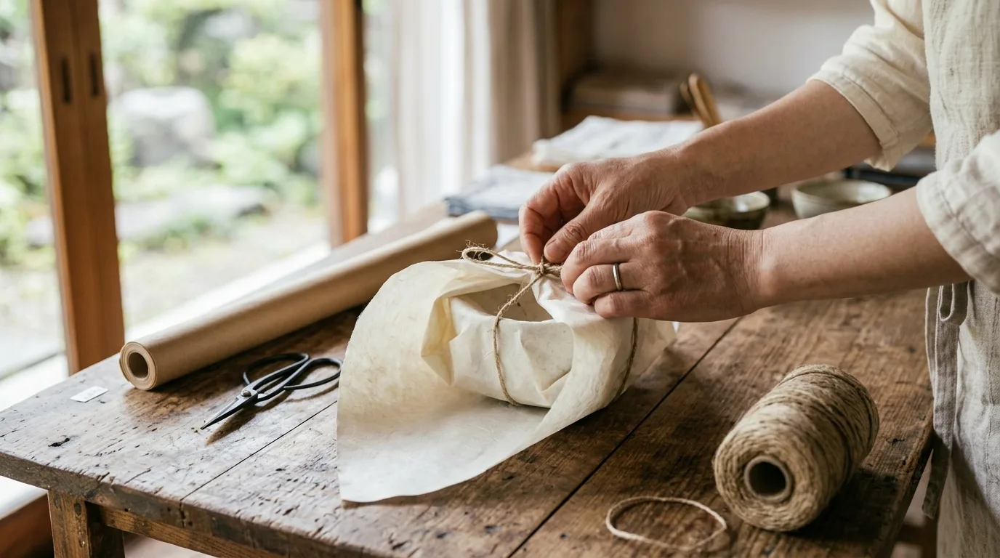

01
陶器・うつわ
土の表情が、料理を引き立てる。
工房をたずねて、つくり手と話し、実際に使ってみたものだけを並べています。ひとつずつ表情がちがうので、手にとって選んでください。欠けたら、継ぎ直しのご相談も承ります。
¥2,800〜
陶器ITEMS ／ しなもの
陶器、木の道具、手織りの布、ガラス、かご。素材も産地もばらばらですが、選ぶ基準はひとつ。「長く使えるか」だけです。棚に並ぶ六つを、ひとつずつご紹介します。

土の表情が、料理を引き立てる。
工房をたずねて、つくり手と話し、実際に使ってみたものだけを並べています。ひとつずつ表情がちがうので、手にとって選んでください。欠けたら、継ぎ直しのご相談も承ります。
¥2,800〜
陶器
使うほど、手になじむ。
毎日の手にしっくりくるかどうかを、使ってから決めています。擦れてきたら木肌をならして油を入れる。手入れをしながら、長く使っていただくための道具です。
¥1,800〜
木
一枚ずつ、織り目がちがう。
手で織られたものなので、一枚ずつ風合いがちがいます。派手さはなくても、使うほどに馴染むものを。ほつれたら繕う。そこまでがお店の仕事だと思っています。
¥3,500〜
布
光を通して、食卓が涼しくなる。
光の通り方が一点ずつちがいます。つくり手と話し、実際に使ってみて、毎日の食卓で使えるものだけを選びました。厚みや口あたりも、手にとってお確かめください。
¥2,400〜
ガラス
編み目の仕事を、暮らしの隅々に。
素材も産地もばらばらですが、選ぶ基準はひとつ。「長く使えるか」だけです。編み目のつまり方、持ち手のおさまり。使ってみてよかったものを置いています。
¥4,200〜
かご
贈る人を思って、包みます。
店にあるものは、そのまま贈りものとしてお包みできます。贈る相手やご予算をうかがってからお選びすることもできますので、お気軽にご相談ください。
¥3,000〜
包み贈る人を思って、包みます。贈りものの包みのご希望も、お気軽にどうぞ。
